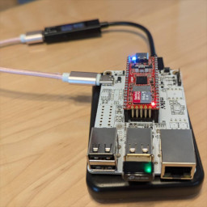

Crafting
This is showcase(or graveyard) of that I made.
Please share if you like them.
Making Milk-V Duo a Wi-Fi access point
Milk-V Duo that working as a Wi-Fi access point with TP-Link's W725N adapter, It's powered by a power bank.
The power consumption of peak is around 1.5W, It working over 12 hours with a cheap and small power bank.